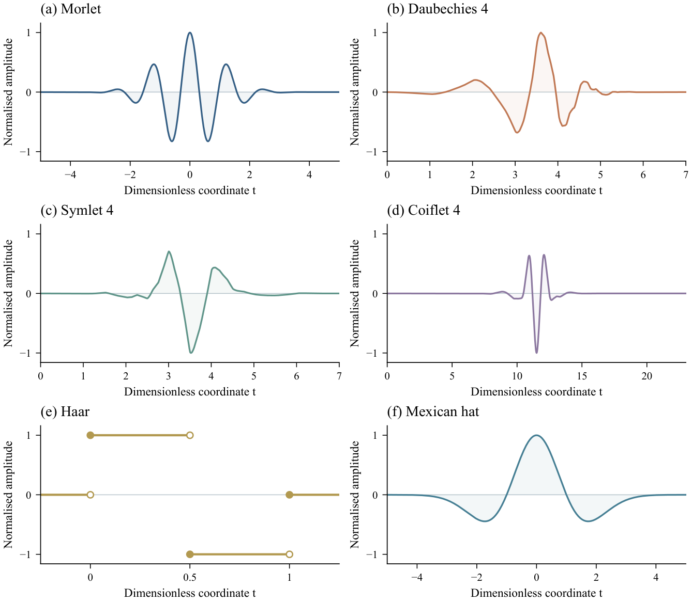

Multi-Wavelet Attention Fusion Network for Pediatric Heart Sound Classification
Protocols, numerical evidence and visual analyses accompanying the manuscript, including three items relocated from its original main text. Explore the complete source supplement, with its wording, data and figure content preserved.
Research archive · Publication and acceptance status are not asserted.

REFERENCE FUNCTIONS Original Fig. S2
i
A complete companion archive. Table and figure identifiers refer to the original supplement. Items incorporated into the revised manuscript remain available here so these links stay stable. Source LaTeX and original vector PDFs are available beside each item. Original main-manuscript references retain v2.0 numbering: consult the revision numbering map.
No material matches your search. Try a model name, dataset, or figure number.
REVISION CROSS REFERENCE
Original and revised manuscript numbering
The original supplement text below retains its v2.0 main-manuscript figure and table references. Use this map when reading it alongside the 14-page submission candidate. The archive's S-number identifiers are unchanged.
This map concerns the 14-page submission candidate. A separate full-integration reading version retains all original main-manuscript items and has different numbering.
Original main Table IV.Classification on pooled high- and low-quality ZCHSound recordings (mean \(\pm\) standard deviation over five runs, %). Binary: Se, Abnormal recall; Sp, Normal recall; Pr, Abnormal precision; F1, Abnormal F1-score. Five-class: N, Normal; ASD, atrial septal defect; PDA, patent ductus arteriosus; PFO, patent foramen ovale; VSD, ventricular septal defect (all class recalls). Acc: accuracy; UAR: unweighted average recall. Bold and underlined values mark the highest and second-highest means within each metric column.
Original main Figure 2.Parallel-convolution core of MSWC. The ``generate wavelet kernel'' block denotes template-based initialisation. Three groups use nominal scale and shift settings, and their output features are concatenated along the channel dimension. The wavelet traces are schematic template symbols. Channel recalibration and feature enhancement are described in the text.
Require:Preprocessed PCG segment \(x_{\text{norm}}\in\mathbb{R}^{1\times L}\); wavelet set \(\mathcal{W}=\{\text{morl},\text{db4},\text{sym4},\text{coif4},\text{Haar},\text{mexh}\}\); current model parameters
Ensure: Class logits \(\hat{y}\)
for each wavelet template \(b\in\mathcal{W}\) do
Apply input MSWC, BN, ReLU, max pooling, and dropout.
Extract features with two EW-TCN blocks; apply dropout and branch attention.
Obtain \(F_b\in\mathbb{R}^{B\times128\times375}\) and apply branch-wise instance normalisation.
end for
Compute softmax-normalised global branch weights \(\alpha_b\).
Fuse wavelet-specific features by \(F_{\text{fused}}=\sum_b\alpha_bF_{b,\text{norm}}\).
Apply fusion convolution, BN, ReLU, GCA, and dropout.
Apply a post-fusion EW-TCN block to obtain 256-channel features.
Apply global pooling and the classifier head to obtain \(\hat{y}\).
Original main Algorithm 1. Forward workflow of MWAF-Net
This supplement provides protocols, additional metrics and resource costs, complete ablations, paired inference, noise robustness, and visual evidence. Unless stated otherwise, performance values are percentages (five-run mean \(\pm\) sample standard deviation, two decimal places). Within each task and metric, the highest and second-highest displayed means are bold and underlined; ties share marks. Lower resource costs and positive noise losses are preferable. Allocation counts, inferential statistics, and filter audits are not ranked.
A. Experiment protocols
Table S1 presents the allocation counts for the additional pooled ZCHSound and CirCor experiments, separately for each task and random seed. The pooled ZCHSound dataset was constructed by combining the high-quality clean and naturally low-quality ZCHSound recordings. For pooled ZCHSound, a participant-specific file-level grouping strategy was adopted to ensure subject independence across the training, validation, and test sets. Recordings associated with the same participant were assigned exclusively to a single split, and identical waveforms were grouped to further prevent data leakage. For CirCor, the allocation groups correspond to individual subjects. Recording counts may differ from group counts because multiple recordings can belong to the same group. Within each split, all recordings and their derived segments from the same allocation group were kept together. The original high-quality and naturally low-quality ZCHSound experiments retained the participant-specific file splitting protocol described in Section III-B of the main manuscript. The corresponding dataset splitting code is publicly available at https://github.com/lieasy/MWAF-Net to facilitate reproducibility.
All recordings and derived segments from an allocation group remain in one partition. Five seeds are repeated random splits, not five-fold cross-validation.
Table S1. Repeated-split allocation counts. Entries are groups/recordings/segments; allocation units are defined below.
Abbreviations used independently in this supplement: phonocardiogram (PCG), congenital heart disease (CHD), atrial septal defect (ASD), patent ductus arteriosus (PDA), patent foramen ovale (PFO), ventricular septal defect (VSD), Multi-Wavelet Attention Fusion Network (MWAF-Net), Wavelet Temporal Convolutional Network (WTCN), multi-scale wavelet convolution (MSWC), enhanced wavelet temporal convolutional network (EW-TCN), gated coordinate attention (GCA), convolutional neural network (CNN), unweighted average recall (UAR), standard deviation (SD), confidence interval (CI), signal-to-noise ratio (SNR), continuous wavelet transform (CWT), root mean square (RMS), rectified linear unit (ReLU), batch normalisation (BN), principal component analysis (PCA), t-distributed stochastic neighbour embedding (t-SNE), exponential moving average (EMA), constant-Q transform (CQT), and floating-point operations (FLOPs). Se, Sp, Pr, and Acc denote sensitivity, specificity, precision, and accuracy; N/Abn and Abs/Pr/Unk denote the Normal/Abnormal and Absent/Present/Unknown class labels. Temporal class activation mapping (T-CAM) and time–frequency class activation mapping (TF-CAM) denote attribution visualisations. CPU denotes central processing unit; CUDA is the Compute Unified Device Architecture computing platform; SOTA denotes state of the art. Wavelet names db4, sym4, coif4, morl, and mexh identify Daubechies 4, Symlet 4, Coiflet 4, Morlet, and Mexican Hat, respectively. Proper model names follow the cited implementations.
A.1 Pooled ZCHSound
We combine the 941 high-quality and 318 naturally low-quality recordings before partitioning, yielding 1,259 recordings: 693 Normal, 221 ASD, 39 PDA, 105 PFO, and 201 VSD. Binary labels combine the four abnormal categories (566 recordings). This pooled-data experiment evaluates learning and testing with a mixture of recording qualities; it does not add synthetic noise or average the scores of separately trained clean and noisy models. Its results appear in main Table IV and, for the five-class confusion matrix, main Fig. 4(c).
For each of the five seeds (1001, 2002, 3003, 4004, and 5005), subjects are assigned to approximately 80 % training, 10 % validation, and 10 % test data. All recordings and derived segments from a subject remain in one partition. All models share the same partition within each task and seed. These are repeated random splits rather than five-fold cross-validation, and test subjects can appear in different runs. Signals are resampled to 1,000 Hz and only complete non-overlapping 1.5-s segments are retained. Training-set global normalisation is followed by the original loader's segment-wise normalisation.
The pooled runs use the archived task-specific training implementations. Binary and five-class runs respectively use epoch limits of 200/100, batch sizes of 16/32, learning rates of \(10^{-3}/(5\times10^{-4})\), and gradient accumulation over 2/4 batches.
All pooled-data classification metrics are calculated at the segment level. Segment labels use the largest predicted probability. The MWAF-Net five-class results in main Table IV and Fig. 4(c) use the class-balanced calibrated head, fitted using three-fold recording-grouped validation before test evaluation. Segment UAR is the primary metric. Each table entry is the mean and sample standard deviation across five runs. The subject-level partitioning described above keeps each subject's recordings and segments within one split; using segments as prediction units does not change the partitioning unit. No overlapping test sets are concatenated. Fig. 4(c) reports the cell-wise mean and sample SD of the five separately row-normalised percentage matrices.
A.2 CirCor
We evaluate the public labelled subset of the CirCor DigiScope Phonocardiogram Dataset (version 1.0.3) [1]. The processed cohort contains 3,163 recordings from 942 visit IDs, linked to 872 unique subjects using the supplied Additional ID field, and yields 46,654 complete segments. Binary classification uses the clinical Outcome labels Normal/Abnormal (1,632/1,531 recordings); three-class classification uses the Murmur labels Absent/Present/Unknown (2,391/616/156 recordings). These are different targets, and neither is identical to the ZCHSound five-diagnosis task. Models are trained on CirCor-specific training partitions; this evaluates the network after task-specific training on CirCor.
For each seed in \(\{1001,2002,3003,4004,5005\}\), linked subjects and exact duplicate audio are grouped before stratified 80/10/10 training/validation/test splitting. All recordings and segments in a group remain in one partition, and all models share the task-specific split. Splitting uses the group-majority label, with ties resolved by the smaller class index. These are repeated random splits, not five-fold cross-validation. The waveform preprocessing retains complete non-overlapping 1.5-s segments at 1,000 Hz and discards the incomplete tail. Training-set global normalisation is followed by segment-wise Z-score normalisation.
All CirCor models in main Table V and all component configurations C1–C5 in main Table VI use the same task-specific training and inference protocol described below. This includes the same data partitions and preprocessing, sampling rule, optimiser and training budget, EMA, replica count, checkpoint criterion, probability averaging, and validation-only calibration selection. Only the model architecture or the stated component configuration changes. The W1–W5 Full/Plain comparisons are a separate experiment defined in Section A.4. The complete MWAF-Net uses the six-branch architecture in main Section II.
For both CirCor tasks, each complete-MWAF-Net replica uses the same architecture as in main Section II. The model comprises six wavelet-initialised branches with seven-tap input MSWC kernels, two EW-TCN blocks per branch, branch-wise channel weighting, instance normalisation before task-level softmax fusion, post-fusion GCA and EW-TCN refinement, global average pooling, and the classifier head described in main Section II. The classifier output dimension is \(C=2\) for Outcome and \(C=3\) for Murmur; otherwise the model architecture is unchanged across the two datasets.
For every baseline and C1–C5 configuration in each subject-grouped split, two independent replicas are trained for at most 70 epochs, with a minimum of 25 epochs before patience-18 stopping, batch size 64, AdamW learning rate \(5\times10^{-4}\), weight decay \(10^{-3}\), EMA decay 0.99, label smoothing 0.03, and Mixup parameter 0.15 applied with probability 0.3. The same weighted sampling with replacement and nominal epoch budget of four segments per recording balance classes, subjects, and recordings for all models. The two replicas receive equal weight at prediction time.
MWAF-Net obtains Outcome UAR 60.68\(\pm\)2.67 %, accuracy 61.37\(\pm\)2.85 %, Normal recall 80.83\(\pm\)1.83 %, and Abnormal recall 40.53\(\pm\)3.99 %. Murmur UAR is 63.18\(\pm\)3.71 %, accuracy 69.51\(\pm\)2.98 %, and Absent/Present/Unknown recalls are 70.27\(\pm\)3.26, 73.22\(\pm\)8.83, and 46.05\(\pm\)8.24 %. Main Fig. 4(d/e) reports cell-wise means and sample SDs after row-normalising each of the five run matrices separately. CirCor C5 in main Table VI uses these same predictions as the complete-model reference. C1–C5 share the training and inference settings above; their differences concern the stated component configurations, rather than unequal training budgets, replica counts, or prediction strategies. C2 also changes branch count and capacity, so its contrast is not an equal-capacity test of the Morlet template alone.
Main Table V and Supplementary Table S2 contain only segment-level metrics, computed per run and then summarised as mean \(\pm\) sample standard deviation. Abnormal is the positive binary class; three-class columns report the recall of each murmur label. Patients are partitioning units, while segments are prediction units and are not treated as independent patients. Test sets may overlap across seeds.
A.3 Model and optimisation conventions
For the Section II architecture and W1–W5, operator names follow main Section II: MSWConv1d denotes MSWC, WaveletTCNBlock denotes EW-TCN, and CoordAtt1D denotes GCA. The 1,500-sample input becomes 375 positions; each branch has two EW-TCN blocks. Instance normalisation precedes weighted fusion and post-fusion convolution, GCA, enhancement, and classification. GCA uses a shared pooled descriptor and Fc1–BN–ReLU before Fc_x/Fc_c projections and gated fusion.
Hyperparameters are fixed without exhaustive search; validation selects checkpoints. Gradient accumulation affects the update batch, while BN/Mixup use physical mini-batches. Main Section II and Sections A.1/A.2 specify original and additional training budgets. Smoothed cross-entropy underlies the focal-style objective. Label smoothing, attention fusion, and Mixup use distinct \(\epsilon_{\mathrm{ls}}\), \(\lambda_{\mathrm{att}}\), and \(\lambda_{\mathrm{mix}}\).
A.4 Full and Plain training configurations
Full and Plain apply to W1–W5 in main Table VI and Supplementary Table S5. The complete-system CirCor C5 results use the same MWAF-Net architecture but retain the separate two-replica training and prediction protocol described in Section A.2. For each matched template configuration, network topology, physical batch size, Adam optimiser, initial learning rate, weight decay, and task-specific data partitions are unchanged. W1/W4 use six heterogeneous templates; W2/W5 use six repeated Coif4 templates; W3 uses one Coif4 branch and thus changes capacity.
Full uses the label-smoothed focal-style objective (\(\gamma=2.5\), \(\epsilon_{\rm ls}=0.2\)), Mixup, linear warmup followed by cosine decay, gradient accumulation, and gradient-norm clipping. Plain uses cross-entropy without label smoothing, no Mixup, a fixed learning rate, one mini-batch per optimiser update, and no clipping. In the multiclass tasks only, Full also uses inverse-class-frequency weighted sampling and waveform augmentation (random crop with reflection padding, Gaussian noise, and amplitude scaling); Plain uses ordinary shuffled sampling without waveform augmentation. Both binary profiles use ordinary shuffled sampling without waveform augmentation. Dropout and architectural regularisers remain part of the unchanged network.
For ZCHSound high-/low-quality binary and CirCor Outcome W1–W5, both profiles use batch size 16, initial learning rate \(10^{-3}\), weight decay \(10^{-6}\), at most 200 epochs, and early-stopping patience 10. Full uses five warmup epochs, Mixup \(\alpha=0.2\) (probability 0.8), two-batch accumulation (update batch 32), and clipping at 0.5; Plain updates every batch (update batch 16). For high-quality five-class ZCHSound and three-class CirCor Murmur, both profiles use batch size 32, initial learning rate \(5\times10^{-4}\), weight decay \(10^{-5}\), and a 100-epoch maximum. Full uses ten warmup epochs, Mixup \(\alpha=0.4\) (probability 0.8), four-batch accumulation (update batch 128), clipping at 1.0, and early-stopping patience 20. Plain updates every batch (update batch 32) and trains for all 100 epochs without early stopping. The validation-selected checkpoint is evaluated in both profiles.
ZCHSound binary comparisons pair five training seeds on the fixed split (seed 42); ZCHSound five-class and CirCor comparisons use the five recorded task-specific split/seed combinations. Full–Plain therefore measures a bundle of optimisation, regularisation, sampling, and (for multiclass tasks) stopping choices, not the causal effect of one technique.
B. Numerical evidence
The following tables complement the main manuscript without repeating the five confusion matrices or stage-wise t-SNE plots. Model groups and row order follow the main comparison tables.
These resource values describe one MWAF-Net backbone shared by the ZCHSound and CirCor experiments. The CirCor prediction protocol averages two independently trained instances of this same architecture, so its ensemble-level storage and FLOP costs are approximately twice the single-backbone values; the task-specific output layer contributes only a negligible difference. The six WTCN variants share the reported WTCN topology. Params: parameters in millions; Size: model storage; FLOPs: floating-point operations in millions. These costs do not measure device latency or energy.
Table S4. Complete ZCHSound component ablations. C1–C4 follow main Table VI; C5 is the complete MWAF-Net. Highest and second-highest means are marked within each task and metric.
Binary data use one fixed split (seed 42) and five paired training seeds (1001, 2002, 3003, 4004, 5005), with early-stopping patience 10. MWAF-Net (6\(\times\)Coif4) repeats Coif4 in six matched branches; MWAF-Net (1\(\times\)Coif4) uses one Coif4 branch. Full and Plain are defined item by item in Section A.4; multiclass Full uses early stopping (patience 20), whereas multiclass Plain trains for 100 epochs. Their contrast measures the combined training choices.
Table S5. Ablations. W1–W5 match main Table VI and preserve the same ordering in all panels. In W1/W4, MWAF-Net uses six branches initialised with Morlet, db4, sym4, coif4, Haar, and Mexican Hat templates. Each task/metric is ranked separately.
CIs are percentile bootstrap intervals over five paired run-level differences. Two-sided Wilcoxon signed-rank p-values are Holm-corrected across four contrasts separately within each task. The CIs are unadjusted run-level intervals, not patient-level or class-recall intervals.
Table S6. Paired UAR contrasts specified before the contrast analysis. Differences are left minus right in percentage points (pp).
Statistical procedure.
For the ZCHSound ablations, we assess four planned UAR contrasts within each task using two-sided paired Wilcoxon signed-rank tests, with Holm correction for multiple comparisons. Binary comparisons pair the five training seeds on a fixed split; five-class comparisons pair the five recorded split/seed combinations. Table S6 reports adjusted \(p\)-values and percentile-bootstrap 95 % confidence intervals (CIs) for the five paired run-level differences. For heterogeneous versus repeated Coif4 initialisation under full training, adjusted \(p\)-values are 0.5000, 0.5625, and 1.0000 for clean binary, noisy binary, and clean five-class classification, respectively. No planned contrast is significant at the 0.05 level after correction (minimum adjusted \(p=0.2500\)). With only five nonzero pairs, the smallest exact two-sided unadjusted Wilcoxon \(p\)-value is 0.0625. These CIs concern run-level differences, not minority-class patient-level sensitivity. We do not infer baseline significance from summary means and standard deviations or treat correlated segments as independent patients.
B.2 Synthetic-noise robustness
Across the 25 evaluated models, MWAF-Net ranks second in binary Overall UAR (81.06\(\pm\)3.11 %) and third in five-class Overall UAR (42.49\(\pm\)4.23 %). Its binary Babble UAR is highest (80.60\(\pm\)2.83 %), and its binary clean-to-noise UAR loss is second-smallest (3.29 percentage points). Ranks refer to the means over the specified noise conditions; the strongest model varies by task and noise type.
White, Pink, Babble, and Motion average five SNRs (0, 5, 10, 15, and 20 dB). Overall averages all 20 noisy conditions; rank is descending Overall UAR among the 25 retained models. \(\Delta\)UAR = Clean \(-\) Overall; a smaller loss is preferable. Column-wise bold/underlining use means, not SDs.
Noise is added before segment-wise normalisation. Average first averages the four noise types within each seed, then reports mean and SD across seeds. Within each SNR, bold/underlining identify the highest/second-highest UAR among the four perturbations; Average is excluded from ranking. The markings describe sensitivity to these conditions, not comparisons between architectures.
Fig. S2. Mathematical mother-wavelet reference shapes. Analytic Morlet/Mexican hat, full-support level-12 numerical approximations for db4/sym4/coif4 and the piecewise Haar function are shown. These are peak-normalised theoretical functions, not the initial seven-tap templates or trained kernels.
C. ZCHSound visual evidence
All PCG examples are from the seed-1001 ZCHSound validation split. Candidate selection uses periodicity and signal quality, then restricts high-frequency ratios to the central 80 percent of the shortlisted values. The selected indices are 1189, 792, 128, 651 and 734 for Normal, ASD, PDA, PFO and VSD. S1/S2 candidates derive from a 25–150-Hz envelope and alternating-event template; amber inter-event activity uses a 150–400-Hz envelope.
Numerical CWTs use the full mother functions: analytic Morlet/Mexican hat and level-10 cascade approximations for db4/ sym4/ coif4/ Haar. Mothers are centred at their energy centroids, integrated over sampling bins, discretely mean-centred and L2-normalised before correlation with identically standardised signals. Sixty-four logarithmically spaced scales span 2–64 samples. The same global coefficient maximum defines the \([-45,0]\)-dB colour range of all 30 maps. Morlet uses the library diagnostic definition, whereas the convolution initializer has modulation constant 1.75. PDA is the most response-diverse of the four preselected pathological examples; all categories remain visible in Fig. S4. This is an illustrative selection, not a population estimate.
Fig. S4. All five real validation examples transformed with the six mathematical mother-wavelet functions. All 30 coefficient maps share one colour reference. Bottom traces compare signed db4/sym4/coif4 coefficients at scale 16.18 over the same 0.45–0.75-s window; shared ordinate limits prevent per-panel amplitude inflation.
ZCHSound network plots use the MWAF-Net checkpoint from W1 under the Full training configuration (seed 1001). The visualisation checkpoint uses input/first-block/second-block, two EW-TCN blocks per branch, and one post-fusion enhancement block. The 64-channel input configuration illustrated in main Fig. 1 and these checkpoint-specific widths instantiate the same six-branch framework. Initial templates are reconstructed from the saved initialisation procedure. For db4, sym4, coif4, and Haar, the first \(K\) scaling-function samples are used, and nominal scale and shift do not modify them; the three groups initially share a template. Forward passes update discrete coefficients without regenerating a continuous mother-wavelet function from the seven trained taps.
Fig. S5. Actual first-layer pre-BN/ReLU outputs from MWAF-Net (W1, Full), channel RMS at nominal groups \(s=1,2,4\). A single unrounded global maximum (displayed as 9.13) normalises all bases, groups and both signals; vertical offsets separate traces. Labels give actual peak RMS. Group labels do not establish learned independent frequency bands. RMS omits channel polarity.
For each output filter, flatten all input-channel connections and kernel taps into \(w_0\) and \(w_1\). Total change is \(100\|w_1-w_0\|_2/\|w_0\|_2\). With \(g=\langle w_1,w_0\rangle/\|w_0\|_2^2\), perpendicular change is \(100\|w_1-gw_0\|_2/\|w_0\|_2\). Squared parallel and perpendicular changes sum to the squared total. Channel distributions are descriptive parameter summaries for one checkpoint, not patient observations or five-seed confidence intervals.
Fig. S6. Six-branch t-SNE visualisations for ZCHSound five-class classification (a) and CirCor Murmur classification (b). (a) ZCHSound MWAF-Net (W1, Full): all 1,256 test segments, perplexity 15, seed 42. (b) CirCor MWAF-Net: the same fixed 2,000 test segments and four-bin pooled branch features used in main Fig. 5, with perplexity 30 and seed 42 (Section D). Architectural branch labels identify learned features, not CWT coefficients. True labels only colour points; T denotes 15-neighbour trustworthiness, as in main Fig. 5. Embeddings and axes are fitted independently within and across datasets; apparent separation does not measure isolated branch accuracy or causal module contributions.
Fig. S7. Initial and trained seven-tap kernels of the ZCHSound MWAF-Net checkpoint (W1, Full; seed 1001). Rows identify six branches; columns identify nominal groups \(s=1,2,4\). The channel nearest the within-group median relative \(L_2\) change is unchanged from the original figures; channel indices and percentage changes are shown. Open circles and filled squares denote initial/trained taps, and the lower axes show raw signed changes \(\Delta w=w_1-w_0\). Weight and difference limits are shared across branches within each nominal group. No interpolation or independent normalisation is applied. Similar compact-wavelet templates across groups reflect the archived initializer, not duplicated plotting arrays.
Fig. S8. Complementary attribution illustrations. (a) Temporal attribution illustration. Highlighted intervals are model attribution scores, not independently verified S1/S2 or murmur annotations. This pre-existing analysis complements the new signal, t-SNE and kernel evidence. (b) The time–frequency attribution illustration complements panel (a). Attribution magnitude does not independently confirm clinical murmur timing or prove a causal contribution of a frequency region.
D. CirCor MWAF-Net visualisation
The illustrative CirCor waveforms are displayed once in main Fig. 3 (bottom). They are validation segments from seed 1001; within each Murmur class, the segment nearest the median crest factor is selected without model-prediction filtering. The selected array indices are 4514, 2593, and 3312, corresponding to recordings 85332_PV, 84786_AV, and 84983_TV with zero-based segment indices 4, 3, and 11 for Absent, Present, and Unknown, respectively. Each 1.5-s trace at 1,000 Hz is mean-centred and peak-normalised for display, so absolute amplitudes cannot be compared. Present and Unknown are recording-level dataset annotations inherited by segments, not independently verified segment-level murmur timing.
The CirCor stage-wise t-SNE appears once in main Fig. 5 (right). One fixed, label-independent uniform sample of 2,000 from all 4,659 test segments is used at every stage for the seed-1001 Murmur model. Temporal features are average-pooled into four bins; early-stage features concatenate the six branches. Each stage uses centring, one global RMS scalar, PCA to at most 50 components, and t-SNE with perplexity 30, seed 42, and 1,500 iterations. Labels only colour the points. Independently fitted embeddings have different axes and do not establish statistical separation or causal module benefits. On the sampled set, 15-neighbour trustworthiness is 0.633 at input and 0.930–0.973 for network stages; class silhouette scores in the corresponding PCA spaces are -0.081 at input and 0.001–0.023 for network stages, reflecting substantial label overlap. These are embedding diagnostics, not classification scores or clinical uncertainty estimates.
Fig. S9. Six mathematical wavelet responses for the same three CirCor validation segments. Complete mother functions are sampled by bin integration, centred and L2-normalised before correlation. Sixty-four logarithmic scales span 2–64 samples; the entire figure shares one coefficient-magnitude reference and a \([-45,0]\)-dB range. Orthogonal-wavelet maps use numerical correlations, not a library continuous-wavelet call with unsupported names. These diagnostic transforms are distinct from learned MSWC activations; scale is not a common physical frequency across wavelets. Zero extension causes edge effects.
The CirCor model-mechanism figures use MWAF-Net trained for Murmur classification, with seed 1001 fixed before feature inspection. This visualisation checkpoint shares the six-branch framework used for the ZCHSound network plots: two EW-TCN blocks per branch, three nominal MSWC groups, and one post-fusion enhancement block. These are checkpoint-specific quantities; main Fig. 1 illustrates the 64-channel input configuration. CirCor weights are loaded from the corresponding task-trained checkpoint.
Fig. S10. Signed db4, sym4 and coif4 responses of the same CirCor examples at the nearest plotted scale to 16 samples. All panels share ordinate limits. This complements the magnitude maps by preserving coefficient polarity. Similar magnitude responses do not prove duplicated arrays, and sign differences alone do not demonstrate useful classification complementarity.
Fig. S11. Actual first-layer MSWC outputs of CirCor MWAF-Net (Murmur classification) on the three validation examples in main Fig. 3 (bottom). For each wavelet branch and nominal group \(s=1,2,4\), channel RMS is computed before batch normalisation and ReLU. Every trace uses one common amplitude divisor; vertical offsets only separate groups. With stride two, output sample centres are spaced by 2 ms. Group labels describe the archived architecture and do not establish learned independent frequency bands. Model inputs follow training-set normalisation and segment-wise Z-score normalisation.
Fig. S12. Trained seven-tap input-layer convolution kernels of the same CirCor MWAF-Net, shown at all three nominal groups for all six branches. Within each branch/group, the output channel closest to its median kernel L2 norm is selected, independently of predictions; channel indices are displayed. All panels share limits and show actual taps without smooth interpolation or separate amplitude normalisation. These are trained discrete kernels only.
SOURCE REFERENCES
References
[1] Oliveira, Jorge and others. The CirCor DigiScope Phonocardiogram Dataset. PhysioNet. 2022. DOI
[2] Bhardwaj, Anandita and Singh, Sandeep and Joshi, Deepak. Explainable deep convolutional neural network for valvular heart diseases classification using PCG signals. IEEE Transactions on Instrumentation and Measurement. 2023
[3] Khan, Juwairiya Siraj and others. Cardi-Net: A deep neural network for classification of cardiac disease using phonocardiogram signal. Computer Methods and Programs in Biomedicine. 2022
[4] Guo, Zhihuan and others. DS-CNN: Dual-stream convolutional neural networks-based heart sound classification for wearable devices. IEEE Transactions on Consumer Electronics. 2023
[5] Chen, Wei and Shi, Ke. Multi-scale attention convolutional neural network for time series classification. Neural Networks. 2021
[6] Shuvo, Samiul Based and others. NRC-Net: Automated noise robust cardio net for detecting valvular cardiac diseases using optimum transformation method with heart sound signals. Biomedical Signal Processing and Control. 2023
[7] Duan, Lin and Yang, Lidong and Guo, Yong. Paramps: Convolutional neural networks based on tensor decomposition for heart sound signal analysis and cardiovascular disease diagnosis. Signal Processing. 2025
[8] Xiong, Weihua and others. Multichannel feature fusion network-based technique for heart sound signal classification and recognition. Expert Systems with Applications. 2025
[9] Wang, Suiyan and others. WCFormer: An interpretable deep learning framework for heart sound signal analysis and automated diagnosis of cardiovascular diseases. Expert Systems with Applications. 2025
Bibliographic fields are reproduced from the supplied BibTeX file. Reference numbers follow first citation on this webpage.